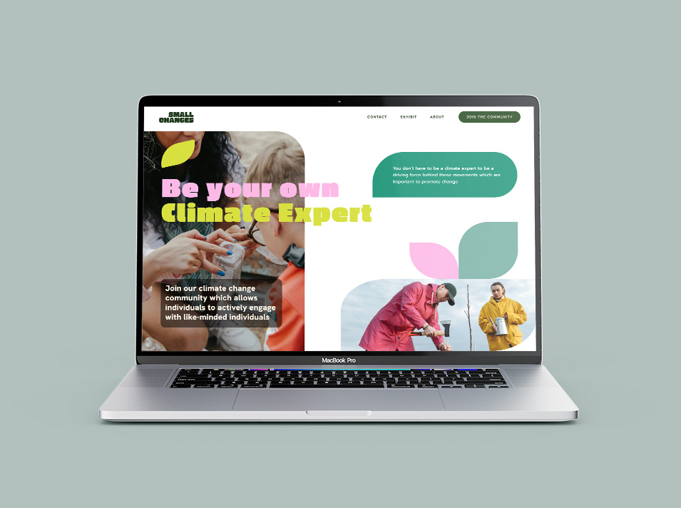

The Problem
How might we get individuals to attach themselves personally to climate change? Climate Action Experts are struggling to transition their audience from education to action. There are a variety of different groups in Vancouver and BC, that are working to impact changes in the area. What are the major barriers they face in their engagement with their audience?
Research
We conducted in-person and Zoom interviews, asking University
professors about their classroom engagement and how they teach the
topic. What are the most important components in encouraging people to
address climate change?
Young adults, faced by both huge amounts of data and misinformation in
the media, are confronting what some have labeled as “Climate
Anxiety.” The climate experts we spoke with confirm this, and we can
help those affected by their uncertainty about the future through an
approach informed by Behavioral Psychology.
Solution
We intend to develop the concept of a climate roadmap exhibit for
young adults to engage in an inspiring experience that helps lead them
toward their first step in the journey of a sustainable future.